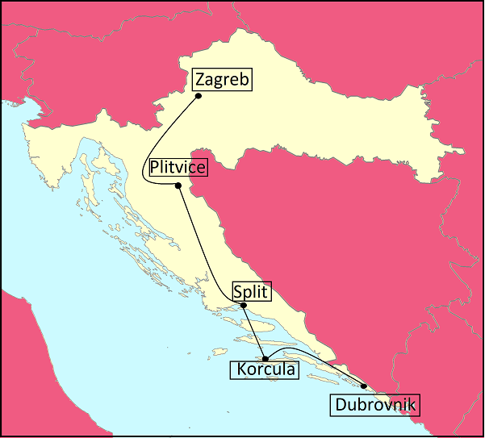

La Croatie
La Croatie est un pays d'Europe centrale. Il est entouré par la Slovénie, la Hongrie où encore de la Serbie. On retrouve plusieurs climat en Croatie, un climat continental au nord, un climat méditerranéen dans le littoral et le reste de la Croatie est montagneux. Aussi, il contient huit pars nationaux et la population est de 4 millions. La langue officiel est le Croate mais l'anglais y est beaucoup parlé.
Nous vous proposons donc un itinéraire à travers la Croatie afin de découvrir ses beaux paysages, son histoires et ses spécialités. Nous vous proposons de commencer par Zagreb...
Zagreb
Il s’agit de la capitale et de la plus grande ville de Croatie. Cette ville compte 780000 habitants et est située en Croatie centrale. Zagreb c’est le cœur de la culture, de l’économie et aussi le centre administratif et politique de la République de Croatie. Son excellente situation géographique au carrefour des routes vers la côte adriatiques et les nombreuses autres villes de l’Europe central, font de Zagreb une destination exceptionnelle et ce, sans compter le charme que la ville tient de son histoire et de sa culture. Découvrez aussi les spécialités culinaires au grand marché de Dolac. Après avoir découvert ce centre culturel, nous vous proposons d’aller à Plitvice…
Plitvice
Le parc national des lacs de Plitvice est une réserve forestière de 295 km² au centre de la Croatie. Nous le connaissons pour sa chaîne de 16 lacs en terrasse, liés par des cascades, qui s'étendent dans un canyon calcaire. Des promenades et des chemins de randonnée sont situé tout autour des bassins et sur l'eau, et un bateau électrique relie les 12 lacs supérieurs et les 4 lacs inférieurs. Ces derniers constituent le site de Veliki Slap, une cascade de 78 m de haut.
Après avoir découvert ces magnifiques espaces verts, dirigeons-nous vers Split…
Split
Split est une ville située sur la côte dalmate en Croatie. Split est réputée pour ses plages et le complexe ressemblant à une forteresse en son centre, le palais de Dioclétien, construit par l'empereur romain au IVe siècle. Autrefois peuplés par des milliers de personnes, ses vastes vestiges comprennent plus de 200 bâtiments. Entre ses murs de pierre blanche et sous ses cours se trouvent une cathédrale et de nombreuses boutiques, bars, cafés, hôtels et maisons.
Après être passer par de nombreux musées et ses vestiges, partons pour l’île Korcula…
Korcula
Korčula est une île de la mer Adriatique appartenant à la Croatie. En quittant la ville de Korčula, véritable musée en plein air, on trouve la riche verdure de l'île, les villages de viticulteurs, de producteurs d'huile d'olive et de pêcheurs. Les produits les plus renommés de l'île sont les vins – rouges et blancs ainsi que l'huile d'olive pressée comme autrefois. Aujourd'hui, Korčula est l'île la plus peuplée de Croatie. Cela fait plus de cent ans que les visiteurs sillonnent l'île ; le tourisme y est, pour ainsi dire, une tradition. Après avoir profité des plages et de la beauté de l’île, allons vers notre dernière destination : Dubrovnik…
Dubrovnik
Dubrovnik est une ville du sud de la Croatie située sur la mer Adriatique. Elle est connue pour sa vieille ville entourée d'énormes remparts en pierre datant du XVIe siècle. Ses monuments, particulièrement bien conservés, vont de l'église baroque Saint-Blaise au palais Sponza, de style Renaissance, en passant par le style gothique. Enfin, la rue piétonne Stradun est bordée de boutiques et de restaurants.
Cette très jolie ville offre des paysages magnifiques, c’est pourquoi, nous vous terminons notre voyage par Dubrovnik.